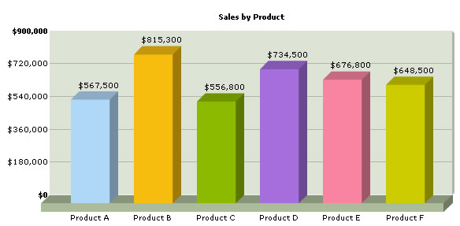
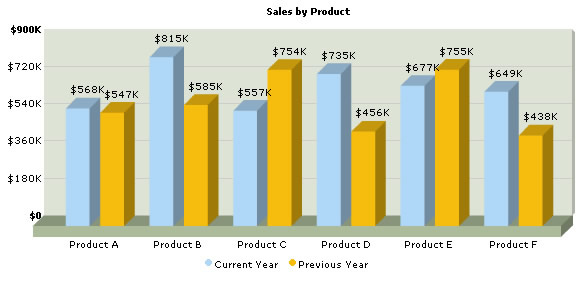

Using FusionCharts PHP Class > Charting Data from Array |
In this section, we'll show you how to use FusionCharts PHP class functions to plot charts from data contained in PHP arrays. We'll cover the following examples here:
Before you go further with this page, we recommend you to please see the previous section "Basic Examples" as we start off from concepts explained in that page. The code examples contained in this page are present in Download Package > Code > PHPClass > ArrayExample folder. |
| Creating a single series chart from data contained in arrays |
| The code to create a single series chart is contained in SingleSeries.php and can be listed as under: |
|
<?php # Create FusionCharts PHP Class object for single series column3d chart # Set Relative Path of chart swf file. # Set chart attributes |
In the above example:
|
| Please go through FusionCharts PHP Class API Reference section to know more about the functions used in the above code. |
| When you view the chart, you'll see a chart as under: |
|  |
| Creating a multi-series chart from data contained in arrays |
| Let us now create a multi-series chart from data contained in arrays. We create a file MultiSeries.php with the following code: |
|
<?php ** Each row will store data for 1 dataset # Create FusionCharts PHP Class object for multiseies column3d chart # Set Relative Path of chart swf file. # Set chart attributes ?> |
Let's analyze what we have done in the code above:
|
| Please go through FusionCharts PHP Class API Reference section to know more about the functions used in the above code. |
| When you view the chart, you'll see a chart as under: |
|  |
| In Download Package > Code > PHPClass > ArrayExample, we've more example codes to create Stacked and Combination Charts too, which have not been explained here, as they're similar in concept. You can directly see the code if you want to. |